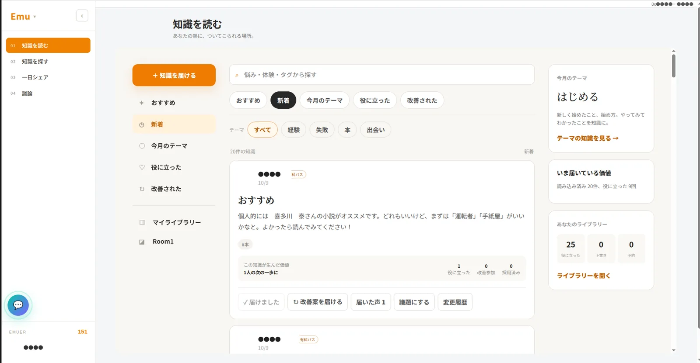
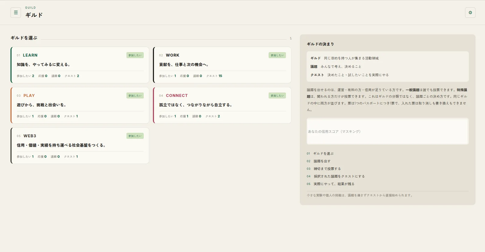
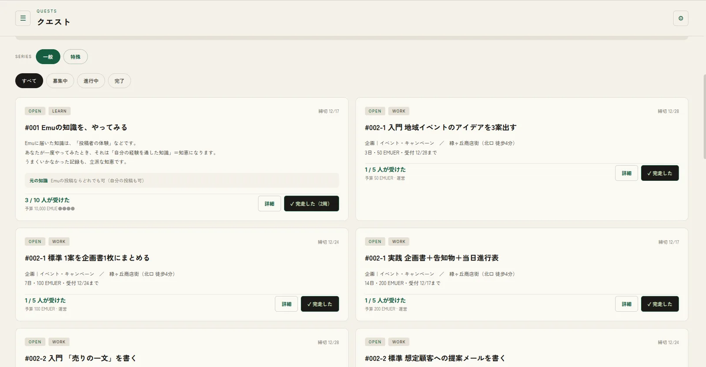
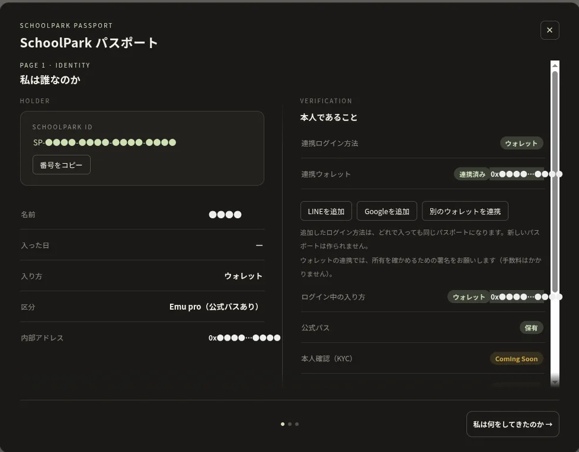
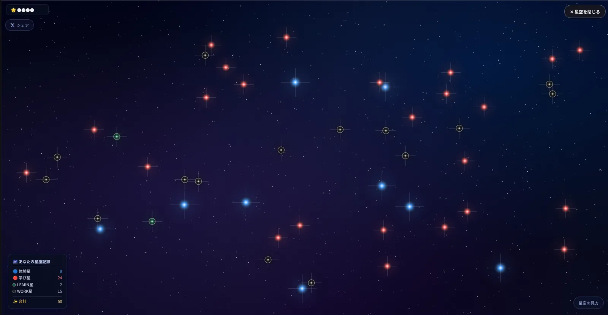

本や授業だけでは分からない「実際にやってみてどうだったか」を読めます。
仕事や暮らしの中で身につけた知恵を、必要としている人に届けられます。
参加したQuestや書いた知識が、あなたのPassportにひもづいて残ります。
Guildで議題を出し、投票で決まったことをQuestとして実行します。
EmuとSchoolParkは、同じアプリの中にある二つの場所です。同じアカウント・同じPassportで行き来できます。
経験から生まれた知識を読み、探し、共有し、議論する場所。
学び・挑戦・実績・コミュニティをつなぐ基盤。
悩み・体験・タグから知識を探して読み、自分でも「知識を届ける」ことができます。役に立った知識には改善案を届けたり、そのまま「議題にする」でGuildの話し合いにつなげたりできます。

LEARN「知識を、やってみるに変える」、WORK「貢献を、仕事と次の機会へ」など、目的ごとに5つのギルドがあります。参加や応援をして、議題を出し、締切まで投票して決めます。票は1つのPassportにつき1票です。誰でも投票できる「一般議題」と、関われる人だけが投票する「特殊議題」があります。

採択された議題や小さな実験が、番号のついたQuestとして公開されます。一般・特殊のシリーズと、募集中・進行中・完了で探せます。参加して活動を記録し、運営の承認を受けると完了。何周も挑戦できるQuestもあります。


ログインすると、一人にひとつの SchoolPark ID が発行されます。LINE・Google・別のウォレットをあとから追加しても、同じPassportに記録がまとまります。本人確認（KYC）は準備中です。

体験星・学び星・ギルドごとの星など、活動の種類ごとに星が灯ります。自分の星空はXでシェアすることもできます。
LINE・Google・メール・ウォレットから選べます。
初回ログイン時に自動で発行されます。手続きは不要です。
Emuで知識を読み、気になるGuildに参加します。
参加して活動を記録します。完了するとPassportと星空に残ります。
なぜSchoolParkをつくるのか。創設者の歩みと考えを、どのギルドにも属さない特別なQuestとして公開しています。
Quest #000 を読む（ログイン後）投稿やGood、貢献などに応じて付与されます。Emu内の取引所でNFTと交換したり、公式パスの割引購入に使えます。現金に換えることを目的としたものではありません。
利用規約 第5条を読む本屋やカフェなどの場所と、GuildやQuestをつなぐ機能を準備しています。公開の時期は、決まり次第お知らせします。
ウォレットの連携は署名による確認だけです。手数料はかかりません。
LINE・Google・メールでログインできます。
運営は合同会社型DAO SchoolParkです。特商法表記・利用規約・プライバシーポリシー
同じアプリの中にある二つの場所です。Emuは知識を読み・書き・議論する場所、SchoolParkはGuildやQuestで挑戦し、記録を残す場所です。同じアカウントで使えます。
Emuには light・plus・pro のプランがあります。内容と料金はプランのページでご確認ください。公式パスの保有者は plus 相当として扱われます。
はい。LINE・Google・メールでログインでき、Passportも自動で発行されます。ウォレットはあとから連携することもできます。
Questに参加して活動を記録し、運営が内容を確認して承認すると完了になります。
Passportの画面からログイン方法を追加すれば、同じSchoolPark IDに記録がまとまります。
EMUERは現金に換えることを目的としたものではありません。使い道はNFTとの交換や公式パスの割引などです。詳しくは利用規約 第5条をご確認ください。